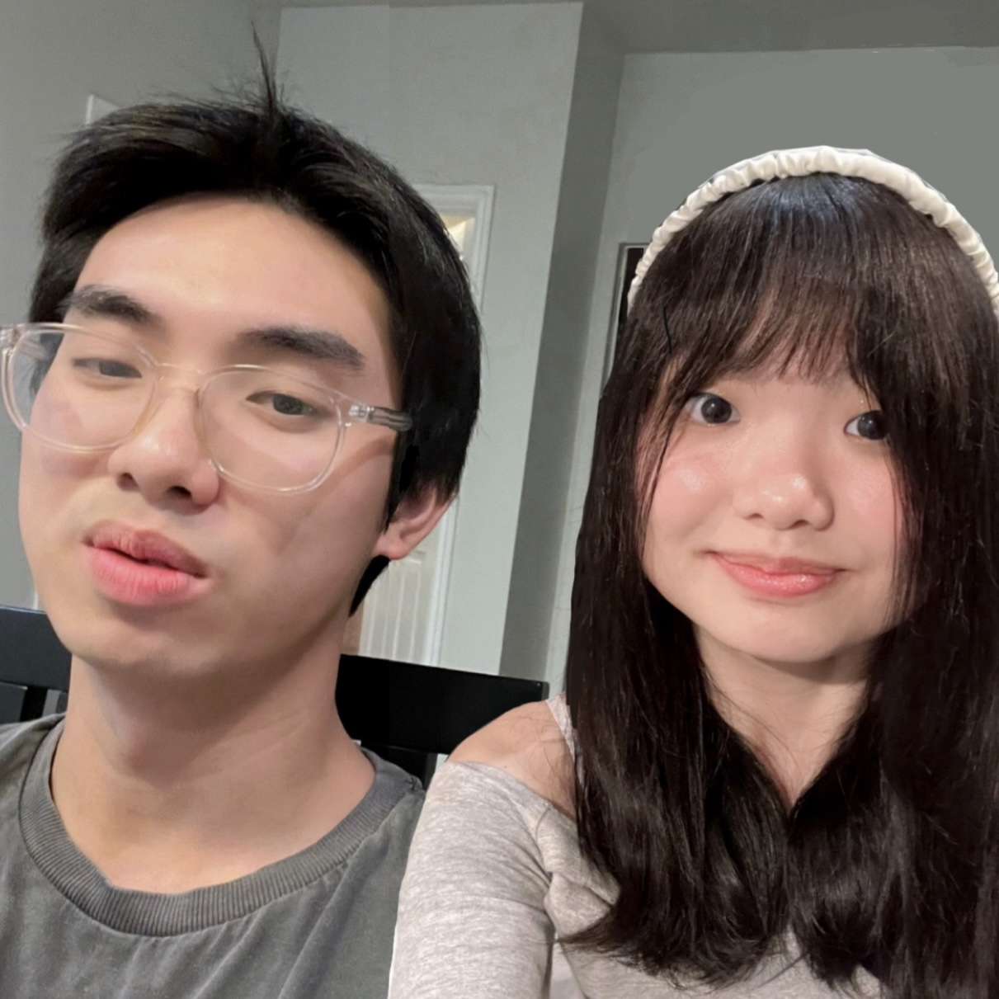
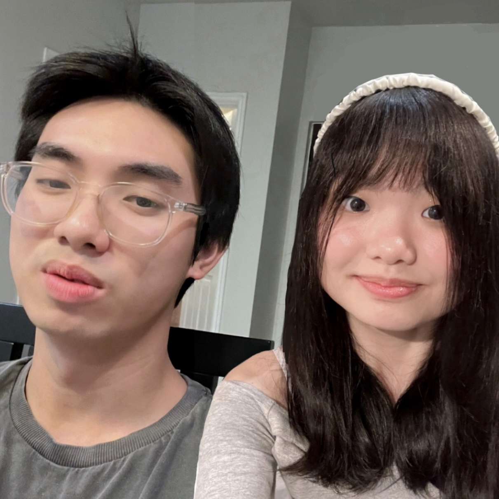

INTRODUCTION
Welcome to my personal website-- a digital window into my world. Beyond showcasing my skills, experiences, and projects, I want to share what drives me. I hope you see me as more than just another face on the Internet. I want you to recognize me as a real person with genuine thoughts and aspirations.
THE MEANING OF LIFE
My dream is to create for people because I believe that the essence of life is found in our connections with others.
Throughout my adolescence, I often felt out of sync with my peers and wondered if something was wrong with me. I even read through the DSM-5 to try to understand myself better. However, through art, film, literature, and music, I found comfort in knowing that many others have experienced what I have. I realized the strength in being unique and learned to embrace who I am.
Just as others’ creations reassured me that I wasn’t alone in my thoughts, I believe that nearly every creation is fundamentally for or related to other people. Whether we draw, write, act, dance, sing, cook, or share knowledge, our creations are deeply intertwined with our interactions. People want to connect, to feel understood and seen. People do and make things for others.
CONNECTION TO CAREER
I’m determined to be a part of this process of creation as a software engineer, someone who develops solutions, enhances experiences, and drives innovation. This career not only enables me to make a meaningful impact on others' lives but also fuels my passion for continuous growth and exploration.
 
